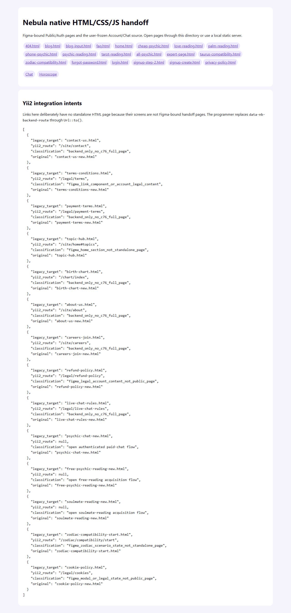
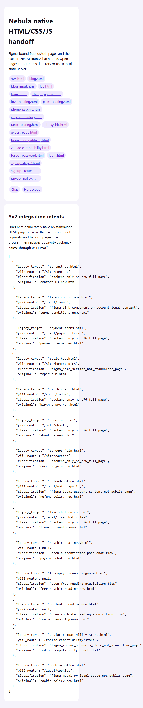

Каталог HTML-поставки
index.html
Служебная навигация по исходникам.
| Когда открывается | Открытие архива |
|---|---|
| Данные | Список файлов handoff. |
| Сценарий | Ссылки открывают статические страницы; это не главная MakTaro. |
| Переходы | Главная |
Общая и предметная логика. Снимки и подписи элементов — исходная редакция макета; поздние уточнения ТЗ имеют приоритет в своей области. Это не проверка текущего сайта.
Состояние 1280 · 1280 × 2687


Элементы и ожидаемые действия
| Элемент | Название в макете | Действие | Ожидаемый результат |
|---|---|---|---|
| E001 Виден | 404.html | Открыть адрес из исходника: 404.html. | Сохранить авторизацию и переданный контекст. Backend-only маршрут связывает Игорь; открытие не выполняет денежное действие. |
| E002 Виден | blog.html | Открыть адрес из исходника: blog.html. | Сохранить авторизацию и переданный контекст. Backend-only маршрут связывает Игорь; открытие не выполняет денежное действие. |
| E003 Виден | blog-input.html | Открыть адрес из исходника: blog-input.html. | Сохранить авторизацию и переданный контекст. Backend-only маршрут связывает Игорь; открытие не выполняет денежное действие. |
| E004 Виден | faq.html | Открыть адрес из исходника: faq.html. | Сохранить авторизацию и переданный контекст. Backend-only маршрут связывает Игорь; открытие не выполняет денежное действие. |
| E005 Виден | home.html | Открыть адрес из исходника: home.html. | Сохранить авторизацию и переданный контекст. Backend-only маршрут связывает Игорь; открытие не выполняет денежное действие. |
| E006 Виден | cheap-psychic.html | Открыть адрес из исходника: cheap-psychic.html. | Сохранить авторизацию и переданный контекст. Backend-only маршрут связывает Игорь; открытие не выполняет денежное действие. |
| E007 Виден | love-reading.html | Открыть адрес из исходника: love-reading.html. | Сохранить авторизацию и переданный контекст. Backend-only маршрут связывает Игорь; открытие не выполняет денежное действие. |
| E008 Виден | palm-reading.html | Открыть адрес из исходника: palm-reading.html. | Сохранить авторизацию и переданный контекст. Backend-only маршрут связывает Игорь; открытие не выполняет денежное действие. |
| E009 Виден | phone-psychic.html | Открыть адрес из исходника: phone-psychic.html. | Сохранить авторизацию и переданный контекст. Backend-only маршрут связывает Игорь; открытие не выполняет денежное действие. |
| E010 Виден | psychic-reading.html | Открыть адрес из исходника: psychic-reading.html. | Сохранить авторизацию и переданный контекст. Backend-only маршрут связывает Игорь; открытие не выполняет денежное действие. |
| E011 Виден | tarot-reading.html | Открыть адрес из исходника: tarot-reading.html. | Сохранить авторизацию и переданный контекст. Backend-only маршрут связывает Игорь; открытие не выполняет денежное действие. |
| E012 Виден | all-psychic.html | Открыть адрес из исходника: all-psychic.html. | Сохранить авторизацию и переданный контекст. Backend-only маршрут связывает Игорь; открытие не выполняет денежное действие. |
| E013 Виден | expert-page.html | Открыть адрес из исходника: expert-page.html. | Сохранить авторизацию и переданный контекст. Backend-only маршрут связывает Игорь; открытие не выполняет денежное действие. |
| E014 Виден | taurus-compatibility.html | Открыть адрес из исходника: taurus-compatibility.html. | Сохранить авторизацию и переданный контекст. Backend-only маршрут связывает Игорь; открытие не выполняет денежное действие. |
| E015 Виден | zodiac-compatibility.html | Открыть адрес из исходника: zodiac-compatibility.html. | Сохранить авторизацию и переданный контекст. Backend-only маршрут связывает Игорь; открытие не выполняет денежное действие. |
| E016 Виден | forgot-password.html | Открыть адрес из исходника: forgot-password.html. | Сохранить авторизацию и переданный контекст. Backend-only маршрут связывает Игорь; открытие не выполняет денежное действие. |
| E017 Виден | login.html | Открыть адрес из исходника: login.html. | Сохранить авторизацию и переданный контекст. Backend-only маршрут связывает Игорь; открытие не выполняет денежное действие. |
| E018 Виден | signup-step-2.html | Открыть адрес из исходника: signup-step-2.html. | Сохранить авторизацию и переданный контекст. Backend-only маршрут связывает Игорь; открытие не выполняет денежное действие. |
| E019 Виден | signup-create.html | Открыть адрес из исходника: signup-create.html. | Сохранить авторизацию и переданный контекст. Backend-only маршрут связывает Игорь; открытие не выполняет денежное действие. |
| E020 Виден | privacy-policy.html | Открыть адрес из исходника: privacy-policy.html. | Сохранить авторизацию и переданный контекст. Backend-only маршрут связывает Игорь; открытие не выполняет денежное действие. |
| E021 Виден | Chat | Открыть вопрос/постоянный диалог с явно выбранным экспертом; при необходимости сначала вход. | Бесплатный диалог и welcome bonus различаются; нет платного Start от одного нажатия. |
| E022 Виден | Horoscope | Открыть адрес из исходника: account/horoscope.html. | Сохранить авторизацию и переданный контекст. Backend-only маршрут связывает Игорь; открытие не выполняет денежное действие. |
Состояние 390 · 673 × 3323


Элементы и ожидаемые действия
| Элемент | Название в макете | Действие | Ожидаемый результат |
|---|---|---|---|
| E001 Виден | 404.html | Открыть адрес из исходника: 404.html. | Сохранить авторизацию и переданный контекст. Backend-only маршрут связывает Игорь; открытие не выполняет денежное действие. |
| E002 Виден | blog.html | Открыть адрес из исходника: blog.html. | Сохранить авторизацию и переданный контекст. Backend-only маршрут связывает Игорь; открытие не выполняет денежное действие. |
| E003 Виден | blog-input.html | Открыть адрес из исходника: blog-input.html. | Сохранить авторизацию и переданный контекст. Backend-only маршрут связывает Игорь; открытие не выполняет денежное действие. |
| E004 Виден | faq.html | Открыть адрес из исходника: faq.html. | Сохранить авторизацию и переданный контекст. Backend-only маршрут связывает Игорь; открытие не выполняет денежное действие. |
| E005 Виден | home.html | Открыть адрес из исходника: home.html. | Сохранить авторизацию и переданный контекст. Backend-only маршрут связывает Игорь; открытие не выполняет денежное действие. |
| E006 Виден | cheap-psychic.html | Открыть адрес из исходника: cheap-psychic.html. | Сохранить авторизацию и переданный контекст. Backend-only маршрут связывает Игорь; открытие не выполняет денежное действие. |
| E007 Виден | love-reading.html | Открыть адрес из исходника: love-reading.html. | Сохранить авторизацию и переданный контекст. Backend-only маршрут связывает Игорь; открытие не выполняет денежное действие. |
| E008 Виден | palm-reading.html | Открыть адрес из исходника: palm-reading.html. | Сохранить авторизацию и переданный контекст. Backend-only маршрут связывает Игорь; открытие не выполняет денежное действие. |
| E009 Виден | phone-psychic.html | Открыть адрес из исходника: phone-psychic.html. | Сохранить авторизацию и переданный контекст. Backend-only маршрут связывает Игорь; открытие не выполняет денежное действие. |
| E010 Виден | psychic-reading.html | Открыть адрес из исходника: psychic-reading.html. | Сохранить авторизацию и переданный контекст. Backend-only маршрут связывает Игорь; открытие не выполняет денежное действие. |
| E011 Виден | tarot-reading.html | Открыть адрес из исходника: tarot-reading.html. | Сохранить авторизацию и переданный контекст. Backend-only маршрут связывает Игорь; открытие не выполняет денежное действие. |
| E012 Виден | all-psychic.html | Открыть адрес из исходника: all-psychic.html. | Сохранить авторизацию и переданный контекст. Backend-only маршрут связывает Игорь; открытие не выполняет денежное действие. |
| E013 Виден | expert-page.html | Открыть адрес из исходника: expert-page.html. | Сохранить авторизацию и переданный контекст. Backend-only маршрут связывает Игорь; открытие не выполняет денежное действие. |
| E014 Виден | taurus-compatibility.html | Открыть адрес из исходника: taurus-compatibility.html. | Сохранить авторизацию и переданный контекст. Backend-only маршрут связывает Игорь; открытие не выполняет денежное действие. |
| E015 Виден | zodiac-compatibility.html | Открыть адрес из исходника: zodiac-compatibility.html. | Сохранить авторизацию и переданный контекст. Backend-only маршрут связывает Игорь; открытие не выполняет денежное действие. |
| E016 Виден | forgot-password.html | Открыть адрес из исходника: forgot-password.html. | Сохранить авторизацию и переданный контекст. Backend-only маршрут связывает Игорь; открытие не выполняет денежное действие. |
| E017 Виден | login.html | Открыть адрес из исходника: login.html. | Сохранить авторизацию и переданный контекст. Backend-only маршрут связывает Игорь; открытие не выполняет денежное действие. |
| E018 Виден | signup-step-2.html | Открыть адрес из исходника: signup-step-2.html. | Сохранить авторизацию и переданный контекст. Backend-only маршрут связывает Игорь; открытие не выполняет денежное действие. |
| E019 Виден | signup-create.html | Открыть адрес из исходника: signup-create.html. | Сохранить авторизацию и переданный контекст. Backend-only маршрут связывает Игорь; открытие не выполняет денежное действие. |
| E020 Виден | privacy-policy.html | Открыть адрес из исходника: privacy-policy.html. | Сохранить авторизацию и переданный контекст. Backend-only маршрут связывает Игорь; открытие не выполняет денежное действие. |
| E021 Виден | Chat | Открыть вопрос/постоянный диалог с явно выбранным экспертом; при необходимости сначала вход. | Бесплатный диалог и welcome bonus различаются; нет платного Start от одного нажатия. |
| E022 Виден | Horoscope | Открыть адрес из исходника: account/horoscope.html. | Сохранить авторизацию и переданный контекст. Backend-only маршрут связывает Игорь; открытие не выполняет денежное действие. |